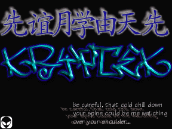

owned by kryptek.
Im no preacher or anything, but I really do want to say that I am personally sad to see what hacking has come to. Hacking nowadays is in no way at all what it used to be. Look at the attrition archives of hacked pages at www.attrition.org/mirror/attrition and ask yourself.. What message do the hacks of say.. take November 1999 carry out? I have seen nothing this month at all but a bunch of people hacking say the dept. of energy or NASA jpl's and put "owned by the cartweel kids!" with a bunch of shouts. Now, im not saying im some fuqin saint either trying to spread this world wide message, but what we are doing (and when I say we, I speak for all hackers.) serves no purpose. Who gives a (excuse the word) shit if you can get into Microsoft or the Navy? We always talk about how the media doesn't know who we are, and they rush to the conclusion that we are little fat techno kids sitting behind out keyboards waiting to steal peoples credit, but with the crap everyone pulls, how can they not think this? Everyone's been abusing the governments systems this month, and for what reason? To put shouts to their irc buddys and get posted on attrition? I just think that we should be more creative as Jericho from attrition said. Put up a page, back up their index.html files, mail the admin from their own system even and tell them how you got in and how they can prevent how you got in for future reference. When you're gonna deface something, try and make it for a purpose, not just for the hell of it, why would anyone want to waste their time owning something and risking getting caught (theres always a risk.) to just put shouts on a page? And I know I have done that too, and im not trying to talk shit either, im just trying to say, we should try and change what we're doing.. hell, theres plenty of news on the net about computer shit and the govt. goin on that we can write about.. anyways, this letters getting long, and im getting bored.
"be careful, that cold chill down your spine could be me watching over your shoulder."
- kryptek
Original page here
d0nt w0rry mr. adm1n.. your site wasnt harmed.. expect some e-mail on how not to be a bonehead.
Shouts: khromy, smoothy, flipsmile, overdosis, p0g0, comlogik, pesc, technovdev, pendrgn, lordess, zero, lobotomy, thrasher, malaki, and whoever else i might've left out.
p.s. dont think of me as an ass for writing this people, im only trying to help.